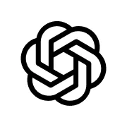

Reset horizon
All six providers' resets on one axis, now to seven days. Hover a marker and its card lights up; hover a card and its marker does.
Local-first · MIT · Bun
Every provider rate-limits you on its own clock, in its own console. LLM Quota reads the CLI logins already sitting on your disk and puts every reset on one timeline — so you can see which subscription is free, which is cooling down, and exactly when you are back.
git clone https://github.com/SandroHub013/llm-quota && cd llm-quota && bun install && bun start
Needs Bun 1.0+ · then open
localhost:4747 · nothing else to configure

 Claude Code
Claude Code
Codex z.ai
z.ai Gemini
GeminiClaude Code has a 5-hour window and a weekly cap. Codex has its own. Gemini counts per model. When you actually hit a limit, "62% used" tells you nothing you can plan around.
When am I back?
All six providers' resets on one axis, now to seven days. Hover a marker and its card lights up; hover a card and its marker does.
Reads the OAuth tokens claude, codex and
opencode already wrote to disk. No new logins for most providers.
No cloud, no database, no account. Keys and tokens never leave the machine, and there is no server to report to.
Fonts and provider logos ship with the app. No CDN, no font host, no favicon service — enforced by a test, not a promise.
Sanitized JSON and meaningful exit codes, so an agent can check its own budget before starting a long job.
All six providers visible without scrolling from 1280×800 up. Keyboard navigable,
prefers-reduced-motion respected.
Nothing is uploaded. Credentials are read from disk, used to call the provider they belong to, and never written anywhere else.
| Provider | Credentials from | What you get |
|---|---|---|
| Claude Code | ~/.claude/.credentials.json |
Live 5h window + weekly quota %, reset time |
| Codex (ChatGPT) | ~/.codex/auth.json |
Active plan + usage windows |
| z.ai | opencode config or pasted key |
Live 5h token + monthly %, web-search status |
| OpenCode Zen | opencode config or pasted key |
API key validity + model count |
| Gemini | In-app Google login or AI Studio key | Live per-model quota via Code Assist |
| Moonshot | Pasted API key | Live remaining credit and usage |
The same data as the dashboard, as sanitized JSON with exit codes that mean something — safe to pipe into a prompt or a shell script.
# compact text summary
bun run cli status
# sanitized JSON for prompts and agents
bun run cli status --json
# one provider only
bun run cli provider codex
# health check
bun run cli doctor
Install it globally with
bun add -g github:SandroHub013/llm-quota
This is the point of the project, so it is worth being exact rather than reassuring.
~/.llm-quota/config.json. Local, and never
committed.
MIT licensed, one runtime dependency, no build step. Provider adapters and UI fixes are welcome.